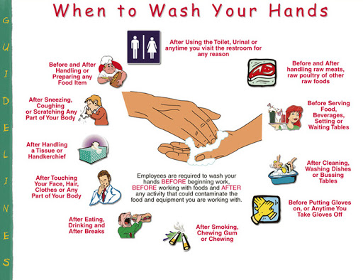

Microorganisms that are capable of causing infectious diseases are all around us.
They can even be found on things and places we think are the cleanest.
If our immune system drops, these pathogens may enter our system and may cause serious illnesses.
However, transmission of these harmful microbes can be prevented through hand washing.
Description:
Hand washing is the act of cleaning one’s hands with the use of any liquid with or without soap for the purpose of removing dirt or microorganisms. It is the most effective measure in reducing the risk of transmitting infectious diseases.
It cannot be said too often that hand washing is the most important and most basic technique in preventing and controlling infections. It is the single most effective infection control measure.
Hand washing is under the umbrella of hand hygiene. Hand hygiene is defined by the World Health Organization as a general term that applies to hand washing, antiseptic hand wash, antiseptic hand rub or surgical hand antisepsis.
Terms:
To understand this study guide better, familiarize yourself with the terms used:
*Hand Hygiene. It is a general term that applies to hand washing, antiseptic hand wash, antiseptic hand rub, or surgical hand antisepsis.
*Hand Washing. It is defined as the washing of hands with plain (i.e., non-antimicrobial) soap and water.
*Antiseptic Hand wash. A term that applies to hand washing with an antimicrobial soap and water.
*Surgical Hand Antisepsis. Commonly called as a surgical hand scrub. This is to remove as many microorganisms from the hands as possible before the sterile procedure.
Why is Hand washing Important?:
*Germs are everywhere; they hide on toys, on doorknobs, and on our hands.
*Germs are so tiny you cannot see them.
*Get on your hands from everything you touch & can get inside of you through your mouth, noise & eyes.
*Most are harmless, but you can pick up some that make you sick; such as colds, flu& diarrhea.
*Hand washing is the best way to prevent spread of germs & illnesses.
*When we forget to wash our hands we can spread germs to other people & give them to ourselves.
Some Tips how to prevent spreading of germs:
Spreading millions of germs are released into the air when we cough or sneeze so here are some tips;
*Coughing or sneezing into a tissue can help keep germs from getting on hands.
*Another safe place to cough or sneeze is into fabric, such as your elbow, to trap and dry out germs.
Concepts:
Principles and concepts surrounding hand hygiene:
*You must use running water in a sink that drains out instead of using a basin.
*You may use soap – antibacterial soap if necessary.
*You must rub your hands against each other for at least 30 seconds to facilitate removal of microorganisms.
*Long nails and jewelry trap germs. It is best to keep fingernails short. If you wear a ring, it is better not to remove the ring before hand washing so that it can be washed too.
*It is always better to use disposable paper towels than to use cloth towel when drying hands to ensure that you can only use those once.
*The faucet is always considered dirty and it is recommended to turn it off using a paper towel in the absence of the ideal sensor or foot pedal.
*Dispensers of soap should be used until completely empty. Once emptied, it should be washed before refilled.
Purposes:
The purposes of hand hygiene are:
*Hand washing can prevent infection
*Avoid pathogenic microorganisms and to avoid transmitting them
Types of Hand Hygiene
The purposes of hand hygiene are:
Routine handwash
- Use of water and non-antimicrobial soap for the purpose of removing soil and transient microorganisms.
Antiseptic handwash
-Use of water and antimicrobial soap (e.g., chlorhexidine, iodine and iodophors, chloroxylenol [PCMX], triclosan) for the purpose of removing or destroying transient microorganisms and reduce resident flora.
Antiseptic handrub
-Use of alcohol-based handrub.
Surgical antisepsis
-Use of water and antimicrobial soap (e.g., chlorhexidine, iodine and iodophors, chloroxylenol [PCMX], triclosan) for the purpose of removing or destroying transient microorganisms and reduce resident flora. Recommended duration is 2-6 minutes.
Indicators of Hand Hygiene
According to the World Health Organization (WHO), there are Five Moments for Hand Hygiene:
1.Before Patient Contact.
2.Before and Antiseptic Task.
3.After Body Fluid Exposure Risk.
4.After Patient Contact.
5.After Contact with Patient Surroundings.
When to wash hands?
Before you:
*Eat, drink or touch food
*Touch your eyes, nose, or mouth
*(For children: play with toys)
After you:
*Go to bathroom
*Eat, drink or touch food
*Blow nose, cough, or sneeze
*(For children: play outside or play with toys or friends) or animals
*If hands look or feel dirty

Supplies Needed:
The following materials or equipment are needed to perform hand washing:
*Soap or detergent
*Warm running water
*Paper towels
*Alcohol
*Optional: Antiseptic cleaner, fingernail brush, plastic cuticle stick
Procedures:
Below are the step-by-step guides for different hand hygiene methods:
Antiseptic Hand rub
The uses of alcohol-based hand rub.
1. Ensure jewelry has been removed
2. Apply quantity of alcohol-based hand hygiene product as per manufacturer’s recommendations into cupped hand.
3. Rub hands palm to palm
4. Right palm over left dorsum with interlaced fingers and vice versa.
5. Palm to palm with fingers interlaced
6. Backs of fingers to opposing palms with fingers interlaced
7. Rotational rubbing of left thumb clasped in right palm and vice versa
8. Rotational rubbing, backwards and forwards with clasped fingers of right hand in left palm and vice versa
9. Rubbing hands together until hands are dry before continuing with patient care, do not rub off excess product
Antiseptic Hand wash
Also known as clean technique includes procedures used to reduce the number of organisms on hands.
1. Gather the necessary supplies. Stand in front of the sink.
2. Wet the hands and wrist area. Keep hands lower than elbows to allow water to flow towards the fingertips.
3. Cover all areas of hands with soap.
4. With firm rubbing and circular motions, wash the palms and backs of the hands, each finger, the knuckles, wrists, and forearms. Continue this friction motion for 30 seconds.
5. Rinse thoroughly with water flowing towards the fingertips.
6. Pat hands dry, beginning with the fingers and moving upward towards forearms, with a paper towel and discard immediately.
7. In the absence of sensors or foot pedal, use another clean paper towel to turn off the faucet.
Surgical Antisepsis
Also known as sterile technique, prevents contamination of an open wound, serves to isolate the operative area from the unsterile environment, and maintains a sterile field for surgery.
1. Remove all pieces of jewelry.
2. Wet hands using sterile water with water closest to your body temperature.
3. Wash hands using antimicrobial soap and/or povidone-iodine.
4. Clean subungual areas with a nail file.
5. Scrub each side of each finger, between the fingers, and the backs and fronts of the hands for at least 4 minutes.
6. Proceed to scrub the hands, keeping the hand higher than the arm at all times to prevent bacteria-laden soap and water from contaminating the hands.
7. Rinse hands and arms by passing them through the flowing water in one direction only, from fingertips to elbow.
8. Proceed to the operating room holding hands above elbows.
9. Dry hands and arms using sterile towel observing aseptic technique.